Si vous avez eu envie de trader des cryptomonnaies sur KCX mais que vous ne savez pas par où commencer, ce tutoriel vous emmènera du stade de grand débutant à celui où vous placerez vos premiers trades en toute confiance. Je vais vous guider à travers tout : la configuration du compte, les dépôts, les différentes interfaces de trading, et des instructions étape par étape pour exécuter votre premier trade. KCEX peut sembler compliqué au début, mais une fois que vous aurez compris les bases, c'est en réalité l'une des plateformes d'échange les plus faciles et les plus puissantes à utiliser. La plupart des tutoriels omettent des étapes importantes ou partent du principe que vous savez déjà certaines choses.
Interface & Outils : Échange de cryptomonnaies KCX (interface de trading futures avec graphiques TradingView intégrés).
Contenu textuel & Code : Paire BTC/USDT Perpetual, prix du Bitcoin autour de 90 600 - 90 700 USDT, moyennes mobiles (EMA/SMA), carnets d'ordres en temps réel, niveaux de Take Profit configurés à 92 481.1 USDT et Stop Loss à 88 854.4 USDT.
Action / Démonstration : Passage d'un ordre d'achat au marché (Market order), configuration des paramètres de gestion des risques (TP/SL) et suivi de position active.
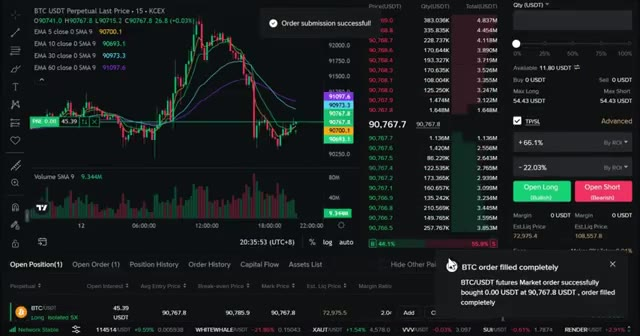
🔍 Agrandir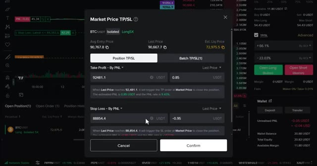
🔍 Agrandir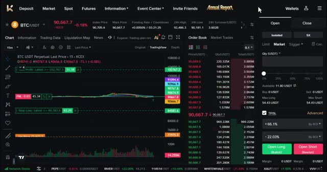
🔍 Agrandirles débutants ne le font pas. Cela ne va absolument pas se produire ici. Et avec mon lien exclusif, vous obtenez des frais de maker et de taker plus bas, ainsi que des récompenses en USDT pour la vérification, les tâches d'apprentissage, les trades au comptant et à terme de base, la configuration du TP/SL et la liaison de votre compte X. À la fin de cette vidéo, vous saurez exactement comment utiliser KCEX et comment réclamer chaque bonus disponible. Maintenant, voici pourquoi KCX est l'un de mes meilleurs choix d'échanges. KCX est une plateforme d'échange de confiance et en croissance rapide dans l'industrie de la crypto, conçue à la fois pour les débutants et les traders professionnels, avec pour valeur fondamentale les utilisateurs d'abord,
Interface & Outils : Interface web de la plateforme KCEX et tableau de classement de plateformes d'échange crypto.
Contenu textuel & Code : Offres de bonus pour nouveaux utilisateurs, primes en USDT, informations sur les frais de maker/taker et volumes d'échange. [COMPORTEMENT] Navigation sur la plateforme KCEX et présentation des avantages liés au lien d'affiliation exclusif.
Action / Démonstration : Explications face caméra et analyse conceptuelle des marchés.
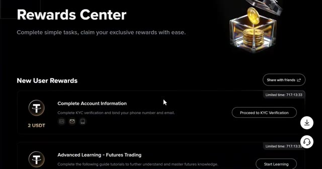
🔍 Agrandir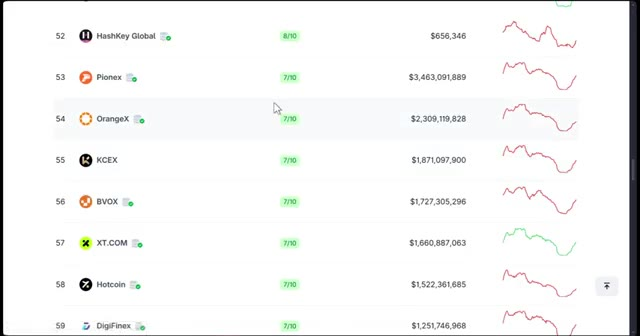
🔍 Agrandirla sécurité avant tout. KCX a l'un des frais les plus bas du marché. Cela signifie que vos ordres auront moins de coûts que sur les autres plateformes d'échange. Ils proposent une inscription rapide et simple. Ici, vous pouvez commencer à trader en quelques minutes, même sans vérification d'identité pour les fonctionnalités de base. KCX offre un large éventail de pièces, du Bitcoin et de l'Ethereum à des centaines d'altcoins et des milliers de paires de négociation. KCEX propose également de nombreuses options de trading telles que le comptant et les contrats à terme avec un effet de levier élevé pouvant aller jusqu'à 125 fois sur certaines paires. KCEX propose également un tableau de bord interactif où vous pouvez voir l'ensemble du marché des cryptomonnaies.
Interface & Outils : Interface web de la plateforme d'échange de cryptomonnaies KCX.
Contenu textuel & Code : Formulaire d'inscription, tableau des tendances du marché (prix et variations en pourcentage), graphique de prix TradingView, carnet d'ordres et panneau de passage d'ordres (Market, Limit, effet de levier).
Action / Démonstration : Navigation et présentation de l'interface d'inscription, des paires de trading tendances et du terminal de trading de l'échange KCX.
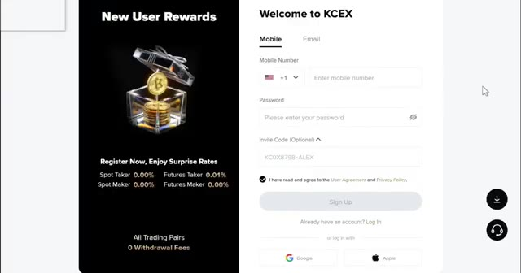
🔍 Agrandir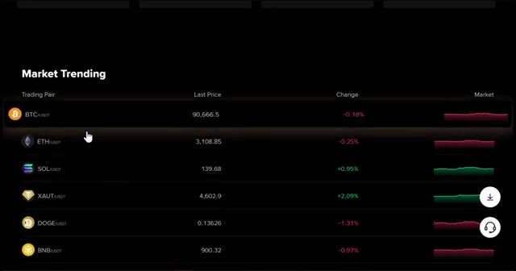
🔍 Agrandir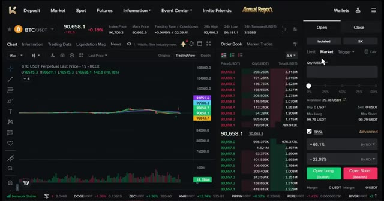
🔍 AgrandirVous pouvez y accéder via l'option de marché dans la barre de navigation, où vous trouverez le sentiment du marché, la dominance du Bitcoin, les liquidations et les données sur la capitalisation boursière. Vous pouvez également consulter les actifs négociables, les données de la blockchain publique, les indices de marché, les actualités économiques, les entrées et sorties de fonds des ETF des principales institutions, et même les flux de capitaux des investisseurs institutionnels.
Interface & Outils : Interface web de la plateforme de trading avec onglets Market, Assets, Public Blockchain, Market Index, Information, ETF, Smart Money.
Contenu textuel & Code : Indicateurs de sentiment du marché (Neutral à 0), dominance du BTC (0,00%), Altcoin Season Index (0/100), liquidations sur 24 heures ($0), capitalisation des stablecoins USDT et USDC, et liste des crypto-monnaies principales (BTC à 90 702,13 $ et ETH à 3 110,17 $).
Action / Démonstration : Navigation et présentation des données globales du marché des crypto-monnaies.
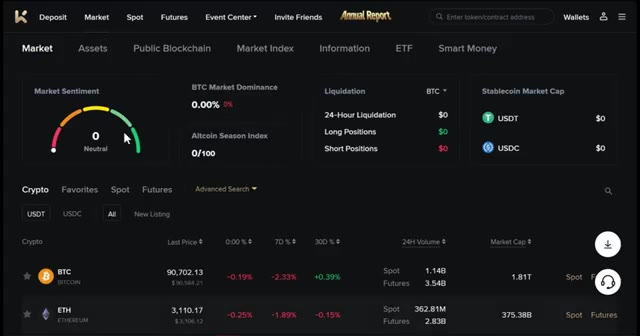
🔍 AgrandirKCEX combine facilité d'utilisation, sécurité, diversité et récompenses, ce qui le rend parfait pour les débutants comme pour les traders avancés. Maintenant que vous savez pourquoi j'aime cette plateforme, passons aux choses sérieuses. Tout d'abord, cliquez sur le lien dans la description. Utiliser ce lien est crucial pour débloquer tous les bonus exclusifs. Vous pouvez vous inscrire avec votre e-mail ou votre téléphone, ou vous connecter via Google ou Apple.
Interface & Outils : Site web de la bourse de cryptomonnaies KCEX
Contenu textuel & Code : Informations sur les frais de trading (Spot Taker 0.00%, Futures Taker 0.01%, etc.) et formulaire d'inscription avec code de parrainage (KCOX8798-ALEX).
Action / Démonstration : Navigation sur le site KCEX et présentation de la page d'inscription pour les nouveaux utilisateurs.
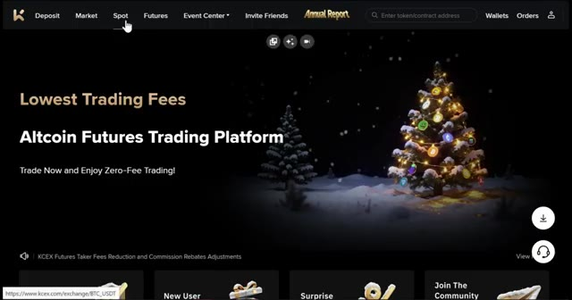
🔍 Agrandir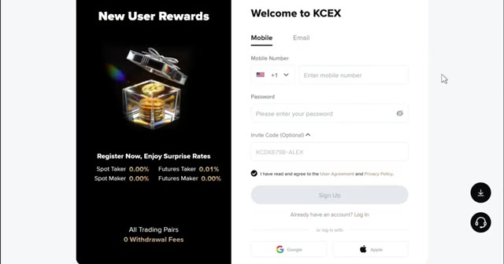
🔍 AgrandirPour ce tutoriel, j'utiliserai Gmail. Une fois que vous êtes inscrit, vous êtes dans votre compte KCX et prêt à commencer. Des bonus seront débloqués au fur et à mesure que vous accomplirez certaines actions, ce que je vais vous montrer. Juste après vous être inscrit, vous pouvez réclamer vos premières récompenses en effectuant la vérification du compte. C'est un moyen simple de gagner deux USDT dès maintenant.
Interface & Outils : Plateforme d'échange de crypto-monnaies KCX (site web).
Contenu textuel & Code : Interface utilisateur affichant des offres promotionnelles, des récompenses pour nouveaux utilisateurs (2 USDT), et des options de vérification KYC.
Action / Démonstration : Navigation sur la plateforme KCX pour présenter le compte utilisateur et les bonus d'inscription.
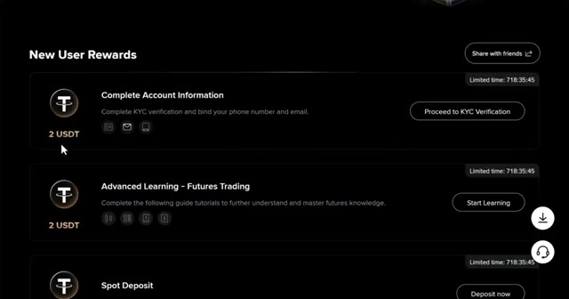
🔍 AgrandirEt si vous terminez les tâches d'apprentissage avancées, c'est encore deux USDT instantanément. Une fois que vous êtes connecté, vous pouvez voir votre tableau de bord principal. Ici, vous pouvez voir en haut différentes options. KCX utilise différents types de comptes pour vous aider à organiser votre trading. Voici ce que signifie chacun des comptes : Compte au comptant. c'est là que vos dépôts atterrissent en premier.
Interface & Outils : Plateforme d'échange de cryptomonnaies KCX (interface web).
Contenu textuel & Code : Solde estimé à 0 USDT, PnL du jour à 0.00 USD, frais Maker et Taker à 0 %, liste des actifs et détails du compte Spot. [DESC_IMAGE_SUIVANTE] Sans objet.
Action / Démonstration : Navigation sur le tableau de bord du compte utilisateur pour présenter les différentes options et sections de la plateforme.
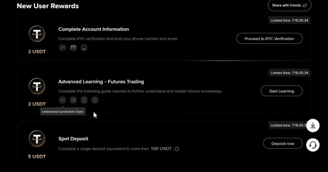
🔍 AgrandirIci, vous pouvez également acheter et vendre des cryptomonnaies aux prix du marché. C'est idéal pour détenir des actifs ou trader sans effet de levier. Compte futures. C'est pour le trading avec effet de levier, vous permettant de prendre des positions plus importantes que ne le permet votre solde. Il débloque également des récompenses en bonus basées sur vos transferts et votre volume de trading.
Interface & Outils : Interface web d'échange de cryptomonnaies (Blofin / WEEX / Bybit)
Contenu textuel & Code : Solde estimé à 0 USDT, PNL du jour à 0.00 USD (0.00%), Frais de Maker et Taker à 0%, et liste des actifs.
Action / Démonstration : Présentation de la section Spot du compte pour l'achat et la détention d'actifs sans effet de levier.
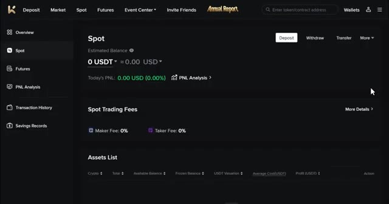
🔍 AgrandirIci, vous pouvez trader avec l'USDT comme marge. C'est ici que vous gagnerez vos futures, vos bonus de trading et vos récompenses de tâches quotidiennes. Vous pouvez également voir votre analyse de PNL, votre rapport de transactions et votre historique d'épargne. Sur KCEX, les utilisateurs peuvent gagner jusqu'à 5 % de taux annuel en pourcentage, et les utilisateurs peuvent également retirer des fonds à tout moment, ce qui s'accompagne de rendements stables.
Interface & Outils : Plateforme d'échange de cryptomonnaies KCEX (interface web).
Contenu textuel & Code : Tâches de bonus (Futures Trading 2 USDT, TP/SL, liaison de compte X), historique des transactions, épargne flexible (5% APY). [DESC_IMAGE_1] Navigation dans les sections de récompenses et d'historique de la plateforme KCEX.
Action / Démonstration : Explications face caméra et analyse conceptuelle des marchés.
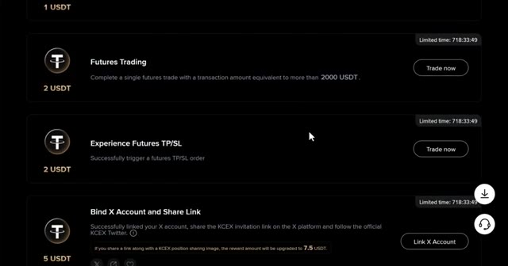
🔍 Agrandir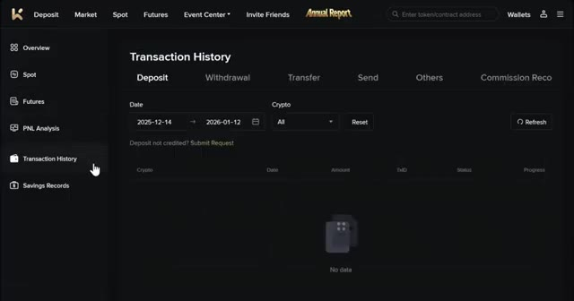
🔍 Agrandir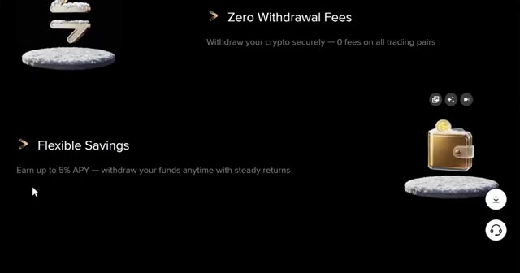
🔍 AgrandirSur la barre de navigation, vous pouvez également voir le centre des événements. Ici, vous pouvez voir les récompenses pour les nouveaux utilisateurs, où vous pouvez suivre vos bonus de nouveaux utilisateurs et la progression de vos tâches quotidiennes. Vous pouvez également voir ici le dépôt pour les cotations et la compétition de trading de contrats à terme. Maintenant que vous connaissez les bases, mettons de l'argent sur votre compte et commençons à réclamer des bonus.
Interface & Outils : Interface web de la plateforme d'échange de cryptomonnaies KCEX (KCEX.com).
Contenu textuel & Code : Menus de navigation de la plateforme, sections 'Event Center', 'New User Rewards', 'Spot Deposit' (100 USDT), 'Spot Trading' (200 USDT) et gains en USDT.
Action / Démonstration : Navigation dans le menu 'Event Center' puis affichage des tâches et récompenses pour nouveaux utilisateurs.
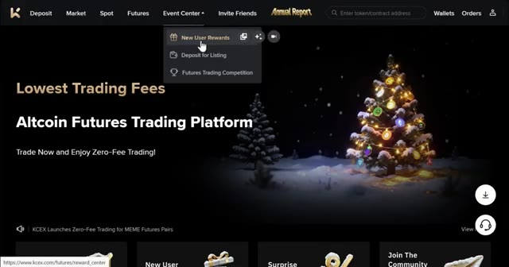
🔍 Agrandir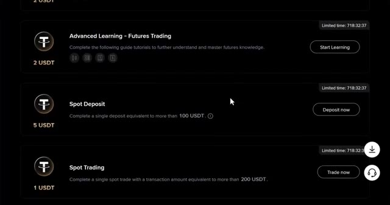
🔍 AgrandirCliquez sur votre profil en haut à droite, puis choisissez portefeuilles, puis cliquez sur dépôt. Sur sélectionner une crypto, choisissez USDT. L'USDT est idéal pour le trading, mais Bitcoin ou Ethereum fonctionnent aussi. Lors de la sélection de votre réseau, choisissez le réseau TRC20 pour des frais bas. Vous verrez votre adresse de dépôt personnelle.
Interface & Outils : Interface web d'une plateforme d'échange de cryptomonnaies.
Contenu textuel & Code : Menu de sélection de cryptomonnaies et liste des réseaux de dépôt disponibles avec leurs frais ou montants minimums (TRC20, BSC, ERC20, etc.).
Action / Démonstration : Navigation dans l'interface de dépôt pour sélectionner une cryptomonnaie (USDT) et son réseau de transfert (TRC20).
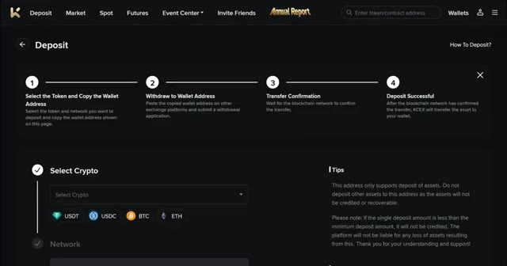
🔍 Agrandir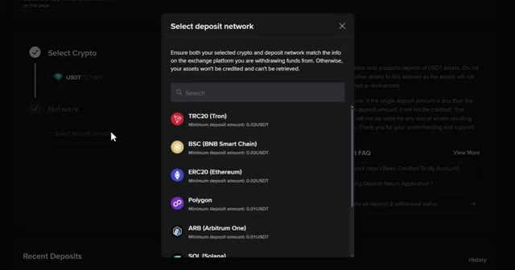
🔍 AgrandirCopiez-la soigneusement. Ensuite, allez sur votre échange ou portefeuille actuel, collez l'adresse et envoyez vos cryptos. Cela prend généralement 5 à 15 minutes. Un conseil de pro, envoyez toujours d'abord un petit montant test, peut-être 10 à 20 dollars, et vérifiez bien que le réseau correspond des deux côtés. C'est là que les bonus commencent à entrer en jeu. Si vous effectuez un seul trade au comptant avec un montant de transaction équivalant à plus de 200 USDT, vous pouvez obtenir un bonus de trading au comptant d'un USDT.
Interface & Outils : Interfaces de plateformes d'échange de cryptomonnaies (Toobit et autre broker).
Contenu textuel & Code : Détails de retrait (19 USDT, réseau TRX, frais de 1 USDT), solde du portefeuille spot (20.9 USDT), et programme de bonus pour nouveaux utilisateurs.
Action / Démonstration : Validation d'une transaction de retrait et consultation du solde de cryptomonnaies.
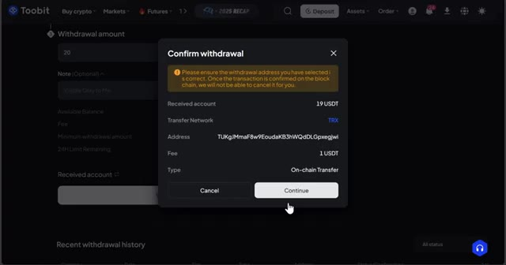
🔍 Agrandir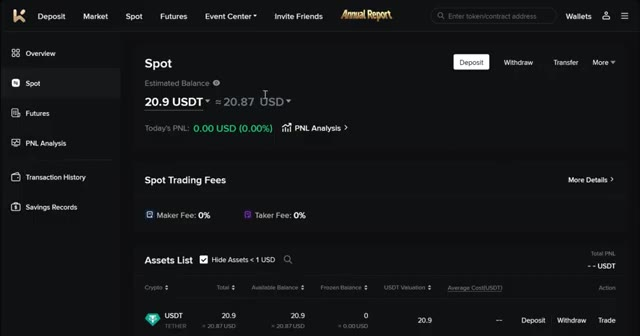
🔍 Agrandir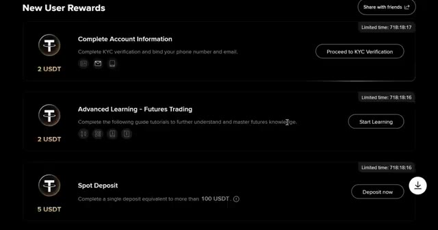
🔍 AgrandirSi vous effectuez un seul trade de futures avec un montant de transaction équivalant à plus de 2 000 USDT, vous pouvez obtenir un bonus de 2 USDT. Et un autre bonus de 2 USDT si vous déclenchez un TP ou un SL sur le trading de futures. En plus de cela, KCEX propose des taux de frais réduits pour tous vos trades, ce qui signifie que vous économisez de l'argent sur chaque transaction.
Interface & Outils : Interface web de la plateforme d'échange KCEX (section des tâches ou bonus).
Contenu textuel & Code : Détails des conditions de bonus : Spot Trading (200 USDT pour 1 USDT), Futures Trading (2000 USDT pour 2 USDT), et Experience Futures TP/SL (2 USDT).
Action / Démonstration : Survol ou présentation des différentes tâches de trading permettant de gagner des bonus en USDT.
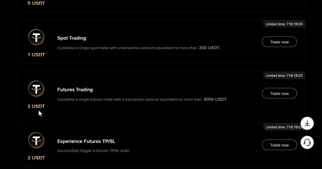
🔍 AgrandirLa plateforme vérifie que vous êtes un trader légitime et si vous êtes qualifié, le bonus sera crédité automatiquement. Si vous avez déposé du Bitcoin ou une autre cryptomonnaie mais que vous avez besoin d'USDT pour trader, voici comment le convertir. Allez dans le trading au comptant en cliquant sur comptant. Recherchez votre paire, par exemple, BTC slash USDT. Sélectionnez l'ordre au marché, choisissez vendre, entrez le montant et cliquez sur vendre, BTC.
Interface & Outils : Interface web de l'échange de cryptomonnaies KCEX (Trading Spot).
Contenu textuel & Code : Liste des paires de trading (BTC/USDT, ETH/USDT, SOL/USDT, etc.), carnet d'ordres en temps réel, graphiques de prix et panneau d'achat/vente au comptant.
Action / Démonstration : Navigation vers l'interface de trading au comptant pour effectuer des conversions de cryptomonnaies.
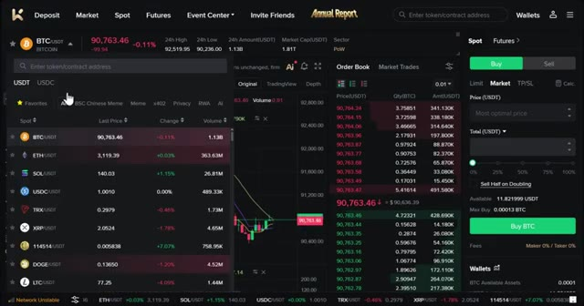
🔍 AgrandirCela convertit instantanément vos Bitcoins en USDT, qui apparaissent ensuite dans votre portefeuille spot. Passons maintenant à ce que vous attendez, le trading de futures. Pour ouvrir des futures, cliquez sur futures dans la navigation principale. Après avoir cliqué sur futures, cela vous amènera au tableau de bord des futures. C'est ici que vous ferez la plupart de vos transactions.
Interface & Outils : Interface web de l'échange de cryptomonnaies KCEX, comprenant les sections Spot et Futures.
Contenu textuel & Code : Soldes de comptes en USDT, graphiques de prix Bitcoin (BTC/USDT) avec indicateurs EMA, et carnet d'ordres en temps réel.
Action / Démonstration : Navigation depuis le portefeuille spot vers la section de trading de futures pour préparer l'ouverture de positions.
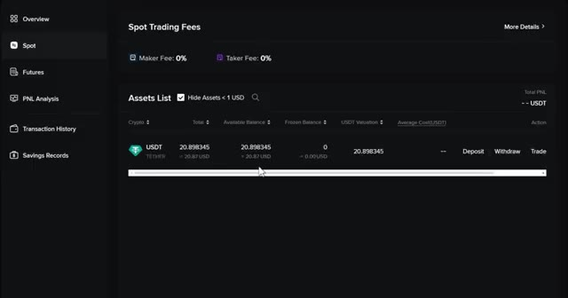
🔍 Agrandir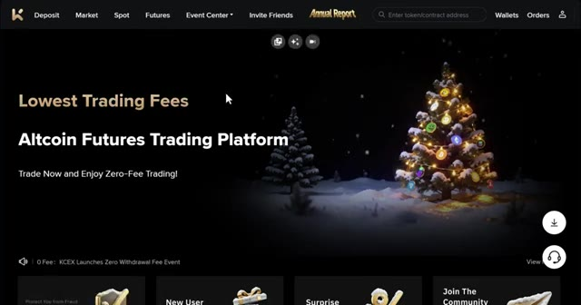
🔍 Agrandir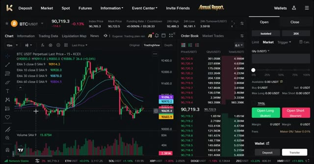
🔍 AgrandirJe vais décortiquer chaque section pour que tout soit parfaitement clair. Voici ce que vous verrez sur l'écran de trading. La sélection de la paire de trading se trouve en haut à gauche. C'est ici que vous choisissez quelle crypto trader, comme BTC / USDT ou ETH / USDT ou n'importe quel autre altcoin. KCEX propose des centaines de paires disponibles.
Interface & Outils : Interface de trading web (échange de crypto-monnaies intégrant un graphique TradingView)
Contenu textuel & Code : Graphique en chandeliers japonais pour la paire BTC/USDT avec des indicateurs de type moyennes mobiles (EMA 5, 10, 30, 60), un carnet d'ordres (Order Book), le prix actuel autour de 90 719 USDT, et le panneau de gestion des ordres à droite (Open Long / Open Short).
Action / Démonstration : Présentation de l'interface de trading et de la sélection de la paire BTC/USDT en haut à gauche.
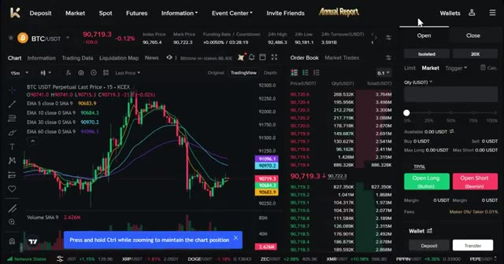
🔍 AgrandirLe graphique des prix est au centre. Il montre l'historique des mouvements de prix et vous pouvez changer l'horizon temporel comme vous le souhaitez. KCEX utilise des graphiques TradingView qui sont la norme de l'industrie. Sur le côté droit, vous trouverez le carnet d'ordres. Les chiffres rouges sont les ordres de vente et les chiffres verts sont les ordres d'achat. Cela montre la profondeur du marché en temps réel.
Interface & Outils : Interface de l'échange KCEX intégrant des graphiques TradingView.
Contenu textuel & Code : Graphique en chandeliers pour BTC/USDT sur l'unité de temps 15 minutes, affichant plusieurs moyennes mobiles (EMA 5, 10, 30, 60), le carnet d'ordres en temps réel avec les chiffres rouges et verts, ainsi que les options de trading (Market, Limit, Open Long/Short).
Action / Démonstration : Navigation et présentation de l'interface de trading, pointant sur l'horizon temporel et le carnet d'ordres.
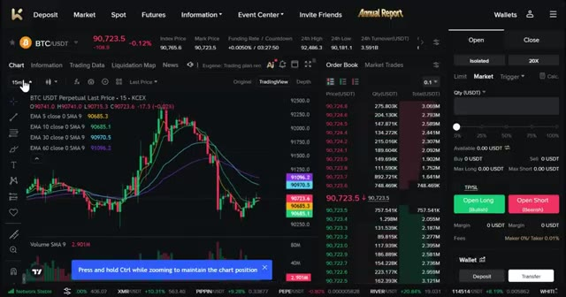
🔍 AgrandirLe panneau de passage d'ordres est tout à droite. C'est ici que vous passerez vos transactions, réglerez l'effet de levier et entrerez la taille de votre position. Enfin, tout en bas, se trouve le panneau des positions. Il affiche vos transactions actives, vos ordres ouverts, l'historique des ordres, l'historique de vos transactions, ainsi que les profits et pertes par crypto-monnaie. Tout ce dont vous avez besoin est juste ici, sur un seul écran, prêt à trader. Avant de placer le moindre trade, configurez trois paramètres importants. Premièrement, choisissez votre mode de marge. KCEX propose deux options, la marge isolée.
Interface & Outils : Interface de la plateforme de trading KCEX avec graphiques TradingView.
Contenu textuel & Code : Graphique en chandeliers 15m du BTC/USDT, indicateurs EMA (5, 10, 30, 60), carnet d'ordres en temps réel et options de levier (20X).
Action / Démonstration : Navigation et présentation des différents panneaux de l'interface de trading de la plateforme (passage d'ordres et gestion des positions).
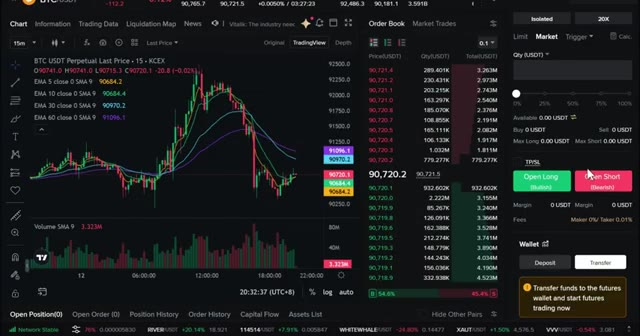
🔍 Agrandir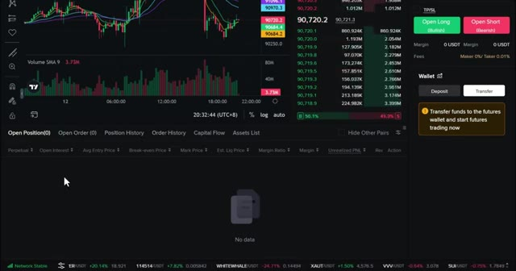
🔍 Agrandir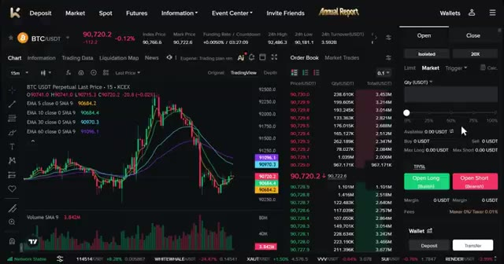
🔍 AgrandirCela protège le reste de votre compte. Si le trade tourne mal, vous perdez seulement ce que vous avez mis dans cette position spécifique. En mode marge croisée, toutes les positions partagent le même solde de marge. En cas de liquidation, les traders risquent de perdre l'intégralité du solde de marge ainsi que toutes les positions ouvertes. Pour les débutants, utilisez toujours la marge isolée pour protéger votre compte.
Interface & Outils : Interface de trading d'échange (type KCEX / plateforme similaire) avec graphique de prix et panneau de configuration des ordres.
Contenu textuel & Code : Menu de sélection du mode de marge affichant les options « Isolated » (Marge isolée) et « Cross » (Marge croisée) avec leurs descriptions textuelles respectives, ainsi que la case à cocher « Applies to all futures ».
Action / Démonstration : Sélection et explication visuelle des modes de marge (isolée et croisée) pour le trading de contrats futures.
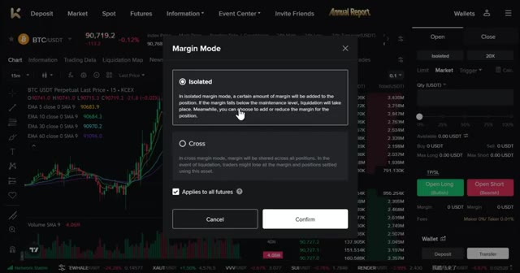
🔍 AgrandirDeuxièmement, définissez votre effet de levier. KCX permet un effet de levier élevé, jusqu'à 125 fois sur certaines paires, mais n'utilisez pas un effet de levier élevé en tant que débutant. Limitez-vous à 5 fois ou 10 fois maximum. Voici comment cela fonctionne. Par exemple, si vous avez un solde de 10 dollars avec un effet de levier de 5 fois, vous obtenez 50 dollars de pouvoir d'achat en position.
Interface & Outils : Interface de l'échange KCX (Futures Trading)
Contenu textuel & Code : Fenêtre de réglage du levier (réglé à 20X, curseur affichant des paliers de 1x à 125x), graphique du cours BTC/USDT en arrière-plan avec indicateurs EMA.
Action / Démonstration : Le présentateur manipule ou montre la fenêtre de sélection de l'effet de levier sur la plateforme KCX.
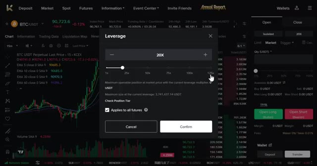
🔍 AgrandirCela signifie que vous contrôlez pour 50 dollars de Bitcoin avec seulement 10 dollars de votre propre argent. Un effet de levier plus élevé signifie un risque plus élevé. Votre prix de liquidation se rapproche de votre entrée, donc un seul faux pas peut effacer votre position. Pour cet exemple, j'utilise un effet de levier de 5 fois sur marge isolée. Plaçons un ordre d'achat.
Interface & Outils : Interface de trading de cryptomonnaies (KCEX)
Contenu textuel & Code : Fenêtre de réglage du levier positionnée à 5X, graphique en arrière-plan BTC/USDT en unité 15 minutes avec indicateurs EMA.
Action / Démonstration : Réglage ou sélection du niveau de levier (5X) pour le trading de contrats futures sur Bitcoin.
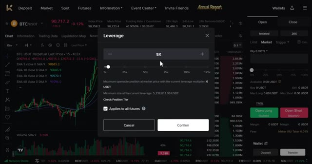
🔍 AgrandirParier que le Bitcoin va monter. Choisissez l'ordre au marché pour qu'il s'exécute instantanément. Vous verrez les options de saisie d'ordre. Ordre par quantité. La quantité de la position de contrats à terme avec effet de levier appliqué. Cela peut être libellé en BTC et en USDT. Ordre par coût. Le coût ici n'est pas affecté par l'effet de levier. Pour ce tutoriel, j'utiliserai l'ordre par quantité en USDT car cela facilite le dimensionnement de la position. Définissez la taille de votre position. Par exemple, une position de 50 dollars. Avec un effet de levier de 5 fois, cela représente 10 dollars de vos propres capitaux. Définissez toujours un stop loss et un take
Interface & Outils : Interface de trading de contrats à terme (Futures) sur une plateforme d'échange de cryptomonnaies.
Contenu textuel & Code : Graphique de prix BTC/USDT avec moyennes mobiles (EMA), carnet d'ordres, et configuration de la taille de position (50 USDT, effet de levier 5x).
Action / Démonstration : Configuration des paramètres d'unités de contrats à terme puis saisie du montant de l'ordre pour un achat au marché.
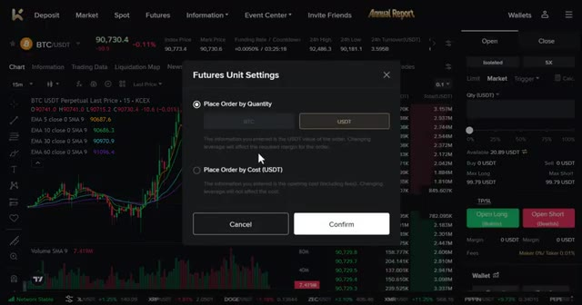
🔍 Agrandir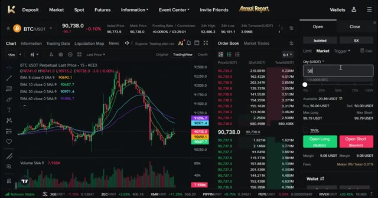
🔍 Agrandirbénéfice. C'est non négociable. Cliquez sur TPSL pour ouvrir les paramètres. Définissez votre stop loss à un prix où vous perdez 2 $ et votre take profit à un prix où vous gagneriez 6 $, soit un ratio risque/rendement de 1 pour 3. Une fois que tout est défini, cliquez sur ouvrir long. Votre trade est maintenant actif. Vous le verrez dans le panneau des positions.
Interface & Outils : Interface de trading crypto (type KCEX ou similaire) avec graphique TradingView, carnet d'ordres et panneau de passage d'ordres.
Contenu textuel & Code : Configuration du ratio risque/rendement 1:3 avec un Take Profit de 6 $ et un Stop Loss de -2 $ sur une position Long BTC/USDT.
Action / Démonstration : Clic sur TP/SL pour configurer les paramètres de gestion des risques, saisie des valeurs de take profit et de stop loss, puis clic sur le bouton d'ouverture de position longue.
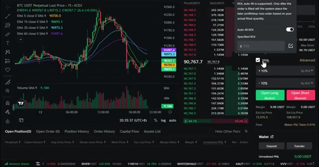
🔍 Agrandir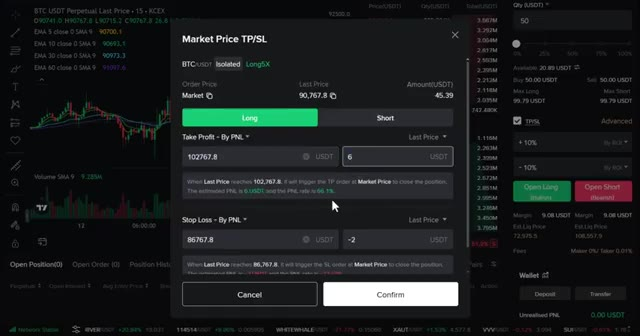
🔍 Agrandir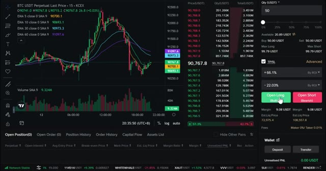
🔍 Agrandirvotre prix d'entrée, votre P&L actuel et votre prix de liquidation. Pour shorter les marchés, choisissez simplement ouvrir un short au lieu d'un long. Même processus, mais vous pariez que le prix va baisser. Et n'oubliez pas, votre volume de trading sur les contrats à terme aide à débloquer des bonus comme le bonus de trading de contrats à terme de deux USDT et le bonus d'expérience TPSL de deux USDT. Ne manquez donc surtout pas cela. Au fur et à mesure que votre trade évolue en votre faveur, ajustez votre stop loss pour sécuriser vos profits. Une fois que vous avez gagné quelques dollars, déplacez votre stop loss au seuil de rentabilité. Vous pouvez également augmenter ou réduire votre position pendant qu'elle est active en utilisant l'option d'ajout slash
Interface & Outils : KCEX (plateforme de trading de cryptomonnaies)
Contenu textuel & Code : Graphique de prix BTC/USDT Perpetual, indicateurs EMA, carnet d'ordres, panneau de passage d'ordres (Open Long / Open Short), informations sur les positions ouvertes (prix d'entrée, P&L, prix de liquidation) et liste de tâches pour bonus en USDT.
Action / Démonstration : Navigation sur la plateforme de trading, observation d'une position longue ouverte et consultation des bonus de trading disponibles.
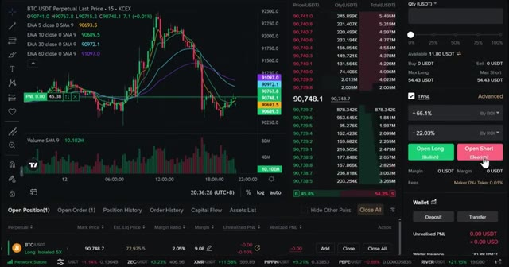
🔍 Agrandir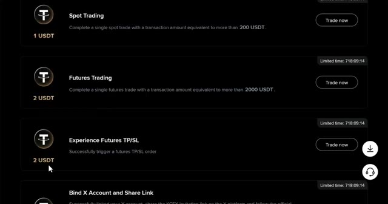
🔍 Agrandir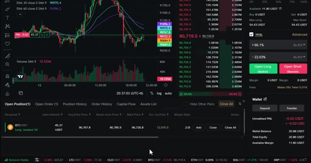
🔍 Agrandirréduire les boutons. Pour fermer, laissez TP ou SL fermer automatiquement. Fermez manuellement avec le bouton de fermeture. Fermez un pourcentage de la position si vous voulez prendre des profits partiels. Ajustez le TP et le SL directement sur le graphique en faisant glisser les lignes. Astuce de pro, ne soyez pas gourmand. Si vous atteignez votre objectif de take profit, fermez le trade. Le marché vous donnera toujours une autre opportunité. Avant de conclure, voici les règles essentielles pour trader. Commencez avec de petites tailles de position. Ne risquez pas plus de 2 à 5 % par trade pour garder votre capital intact. Utilisez toujours des stop-loss. C'est non négociable lorsque vous faites
Interface & Outils : Plateforme de trading crypto (interface de type échange de contrats perpétuels).
Contenu textuel & Code : Graphique BTC/USDT en timeframe 15m, carnet d'ordres, informations sur la position ouverte, niveaux de Take Profit (TP) et Stop Loss (SL).
Action / Démonstration : Démonstration de la fermeture partielle d'une position et de l'ajustement des niveaux de risque directement sur le graphique.
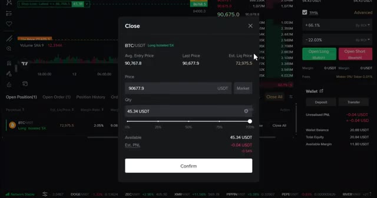
🔍 Agrandir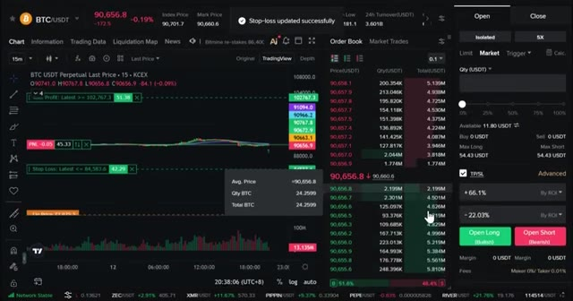
🔍 Agrandir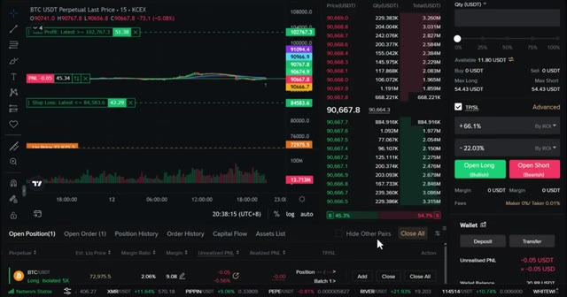
🔍 Agrandirtrading. Chaque transaction a besoin d'un stop loss avant d'entrer. Tenez un journal de trading. Notez chaque transaction que vous effectuez. Prix d'entrée, prix de sortie, pourquoi vous l'avez prise, ce que vous avez appris. C'ici que vous vous améliorez. Ne courez jamais après les hausses. Si vous avez raté un mouvement, attendez la configuration suivante. Le FOMO est le moyen le plus rapide de perdre de l'argent. Et enfin, ne risquez jamais plus que ce que vous pouvez vous permettre de perdre. Le trading est une compétence qui peut vous donner de la liberté, mais il peut aussi devenir risqué. Cela demande de la répétition et de la discipline. Très bien, c'est donc l'analyse complète de la façon de trader les contrats à terme sur KCEX. De l'inscription au dépôt jusqu'à l'ouverture
Interface & Outils : Interface de trading d'une plateforme d'échange (type exchange crypto avec graphique TradingView intégré).
Contenu textuel & Code : Graphique en chandeliers 15m pour BTC/USDT, indicateurs EMA (5, 10, 30, 60), carnet d'ordres (Order Book), options d'effet de levier (5x puis 20x), et types d'ordres (Market, Limit, TP/SL).
Action / Démonstration : Navigation et présentation de l'interface de trading, illustrant le passage d'ordres d'achat/vente (Open Long / Open Short) avec gestion du levier et des risques.
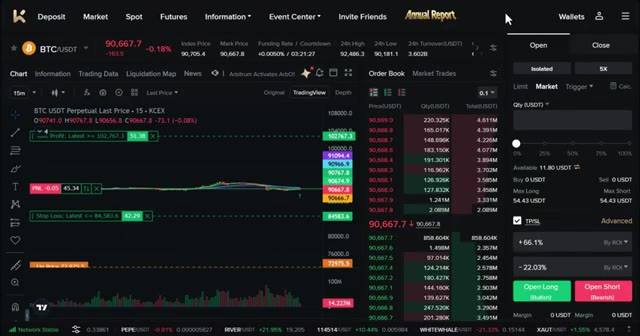
🔍 Agrandir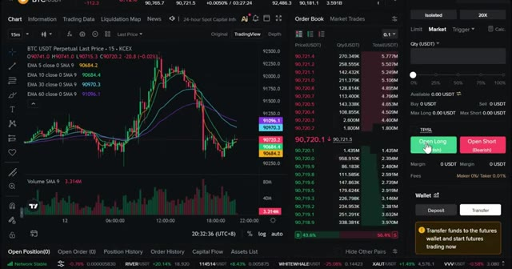
🔍 Agrandiret à gérer votre premier trade. Avant de partir, rappelez-vous, utilisez mon lien dans la description pour réclamer tous les bonus. Commencez petit, concentrez-vous sur l'apprentissage, et ne courez pas après les profits au début. Si vous avez des questions, laissez-les dans les commentaires ci-dessous, et je vous vois dans la prochaine vidéo.
Interface & Outils : KCEX (Interface d'échange de cryptomonnaies / Futures)
Contenu textuel & Code : Paire BTC/USDT Perpetuel, prix actuel autour de 90 667$, effet de levier 5x en mode isolé, PnL non réalisé à -0.05 USDT.
Action / Démonstration : Gestion et visualisation d'une position longue ouverte sur le Bitcoin avec affichage du carnet d'ordres et du solde disponible.